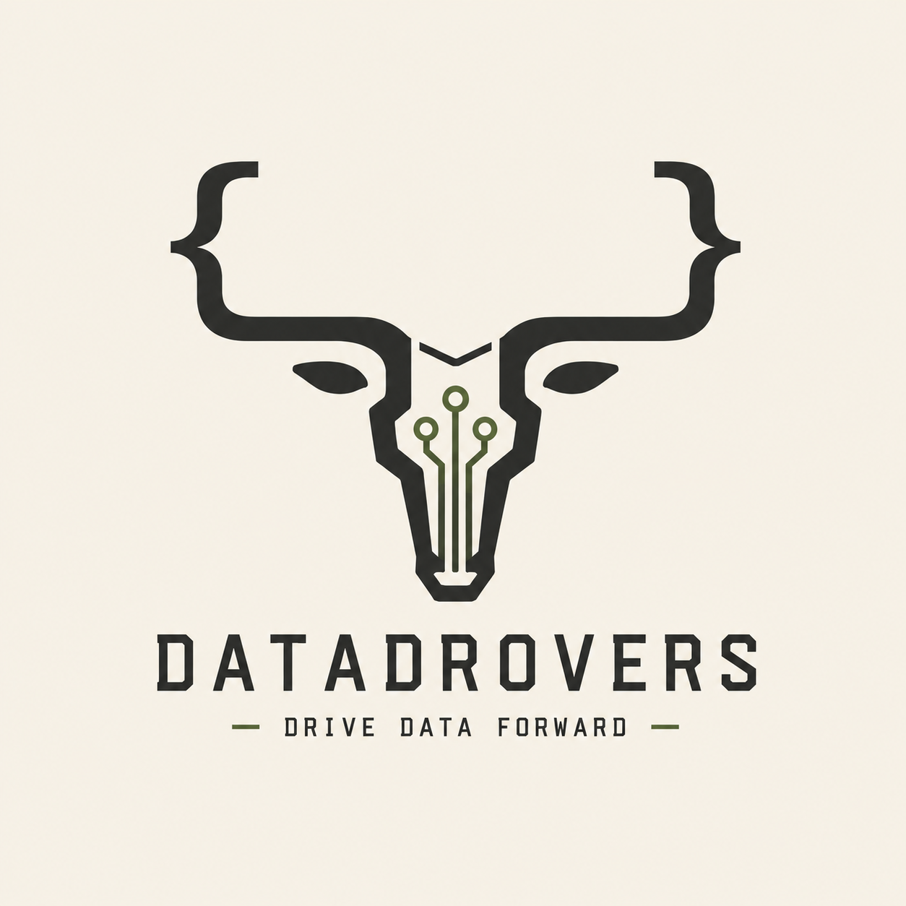

Architecting · Tinkering · Building Tools
Data Drovers is the working plateau for a range of projects that rein in disparate systems, steer your data in the right direction, and lend a technical hand.
New projects meandering here as they occur. Some arrive by stampede.